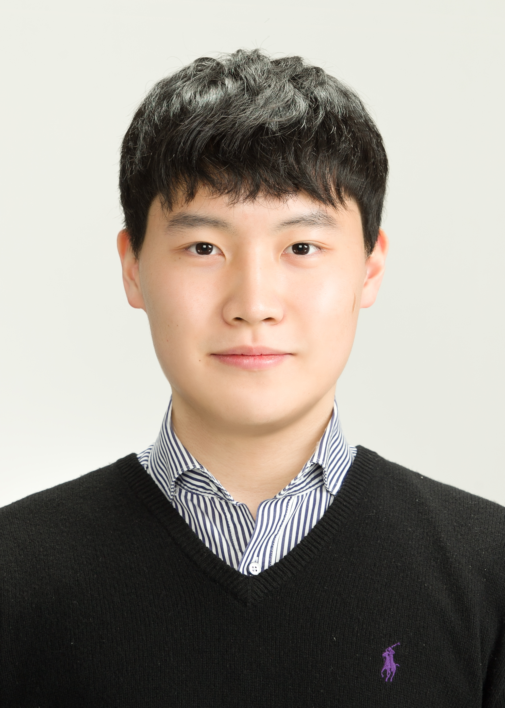
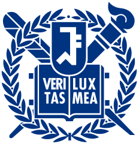
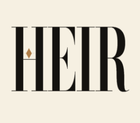

';" />Seungmin Yoo
Profile Summary
A Data Science undergraduate at Hanyang University with a deep passion for Generative AI, 3D Computer Vision, and Robotics + AI (perception, locomotion, manipulation), and a growing focus on domain-specialized LLM reasoning. I have built RAG/KG systems at Aidvance (Berlin), lead a cultural-heritage AI initiative with the Hanyang University Museum, and am extending my research interest toward embodied AI and robot learning — bridging visual/language understanding with physical interaction.
Education
Hanyang University, Seoul Campus
B.S. in Data Science, Department of Data Science
Cumulative GPA: 4.29 / 4.5 (4.5 / 4.5 in Fall 2024 & Spring 2025 — 1st in Department)
Mar 2021 – Feb 2027 (Expected)
Currently enrolled in 4th year
Research Experience

DYROS (Dynamic Robotic Systems Lab), Seoul National University | Undergraduate Research Intern
Researching sim-to-real transfer for robot learning: measuring the sim-to-real gap directly — rather than inferring it from real-world failure — and using that measurement to decide which technique (calibration, domain randomization, online adaptation) actually closes it.
- (Sim-to-Real) Building a gap-measurement baseline and calibration loop in NVIDIA Isaac Sim / Isaac Lab for a Husky mobile base with dual Franka FR3 arms.
- (Infrastructure) Developing reusable research infrastructure — a combined Husky + dual-FR3 simulation asset (not publicly available), RL training environments, and a config-driven experiment pipeline (PyTorch, rsl_rl, ROS2).
Undergraduate Research Intern (Generative AI & Personalization)
Participating in research to develop a high-performance model by applying Personalization techniques to Visual Autoregressive (VAR) models.
- (Research) Surveyed and comparatively analyzed relevant papers on "Personalization on VAR" to select a baseline model.
- (Experiment) Analyzed the baseline model's code and designing and conducting systematic experiments for performance enhancement.
Other Projects
Humanoid Autonomous Manipulation Simulation (MATLAB, 2026) — solo end-to-end Atlas humanoid simulation covering LiDAR perception, SLAM, RRT* navigation, LIPM walking, IK, and PPO residual manipulation; built as a self-study exercise to deepen robotics fundamentals.
Industry Experience

HEIR | Co-founder & CEO
Cultural heritage is a vital asset that demands preservation and research, serving as the very foundation of national identity. However, compared to other industries, this sector has largely been left behind in technological adoption and innovation. To bridge this gap, I co-founded HEIR alongside university peers, driven by the vision of advancing cultural heritage through AI. As CEO, I lead ecosystem-level innovation through an official partnership with the Hanyang University Museum.
- (Cultural Heritage-Specialized AI: Bonda) Designed and built Korea's first AI tailored specifically to cultural heritage. During a pilot deployment at the Hanyang University Museum, researchers reported that it dramatically reduced literature-review times — which had previously taken over two months — while surfacing novel academic insights. Following an enthusiastic demonstration for approximately 50 curators, we are discussing deployment with Seoul National University, Yonsei University, and the Hanbaek Cultural Heritage Institute.
- (Museum Collection Management System) Developed an intuitive system that lets curators photograph, digitize, and catalogue artifacts directly into a structured database, addressing large, poorly catalogued collections that cannot be fully used for research or exhibitions. It is now fully deployed in daily operations at the Hanyang University Museum and includes an automated pipeline that reformats records to meet government-mandated filing standards.
- (Low-Cost Immersive Exhibition Content) Created a service that leverages AI to produce immersive exhibition content at a fraction of traditional costs, enabling smaller museums to move beyond conventional glass displays. The service is scheduled to make its public debut in an upcoming special exhibition at the Hanyang University Museum.
Aidvance GmbH (Berlin, Germany) | Freelance AI Engineer
Aidvance is a global startup tackling mental-health stigma and gaps in care through AI therapists, working toward timely, personalized care for everyone. Aligned with its mission of solving acute social challenges through technology, I joined as one of the initial four team members (now approximately 10). After an on-site internship in Berlin, I continued for roughly a year as a freelance AI engineer after returning to Korea, contributing to the company's major fundraising milestones and rapid scale-up.
- (AI Co-pilot for Therapists) Identified an opportunity to simultaneously gather high-quality training data and optimize therapist workflow efficiency. Pitched and secured approval directly from the CEO, then led the project from ideation to production rollout within two months.
- (DSM-5 Knowledge Graph) Built a specialized clinical knowledge base grounded in the DSM-5 to improve response reliability and minimize hallucinations. Bridged a lack of formal psychotherapy training through close collaboration with the clinical therapy team and rapid self-directed study to architect the knowledge graph.
- (Memory & Evaluation Infrastructure) Proactively identified the steep maintenance costs of the existing database infrastructure and restructured it into a Markdown-based memory system to optimize cost. In parallel, designed an intuitive evaluation interface that enabled non-technical therapists to assess AI outputs directly, overhauling the internal feedback loop.
Storm Study, Ggumdamgil | Full-stack Developer
Jan 2024 – Oct 2025Storm Study is an EdTech startup dedicated to reimagining education so that students facing learning difficulties can study effectively. As a member of the engineering team, spearheaded the end-to-end lifecycle — from product planning to full-stack development — for multiple programs designed to deliver accessible, engaging learning experiences.
- (Cognitive-Learning Program) After analyzing target-user behaviors, oversaw the product planning, development, and user testing of an educational game optimized for cognitive skill development. This initiative was a core contribution to the company's Gold Prize at the 2025 Korea International Women's Invention Exposition for its Gamification-Based AI Learning Service System.
- (English-Learning Program) Directed the development of an English-learning tool that incorporated gamification into vocabulary, writing, and listening practice. Focused on intuitive UX so students could remain engaged without finding the material repetitive.
- (Operations Admin Redesign) Led the end-to-end migration of a legacy PHP admin portal to a modern Next.js architecture, with the goal of improving administrative efficiency and management convenience beyond surface-level front-end development.
Technical Skills
Languages: Python, JavaScript, MATLAB
AI / ML: PyTorch, LangChain, LangGraph, Scikit-learn
Web / DB: FastAPI, Next.js, Neo4j
DevOps / Tools: Git, Docker
Honors & Activities
Military Service
Republic of Korea Marine Corps (ROKMC) | Sergeant (SGT), Enlisted Class 1278 — 6th Marine Brigade, Baengnyeong Island
Scholarships
Hanyang Brain Scholarship (Academic Excellence) | Two full-tuition awards for ranking 1st in the Department in Fall 2024 and Spring 2025 (GPA 4.5 / 4.5)
Spring 2025, Fall 2025Hanyang Global IC-PBL Frontier Scholarship | Hanyang University
Fall 2025Undergraduate Leadership Scholarship | College of Engineering (Software), Hanyang University
Spring 2025, Fall 2025AI-Dea Leading Scholarship | Hanyang University
Spring 2026Awards & Programs
Global Frontier Program Selection (Team Leader) | Hanyang University (for HEIR Project)
2025Gold Prize, Korea International Women's Invention Exposition | Storm Study program for slow learners
2025Research Portfolio
Appendix — extended technical detail on selected projects from the Research Experience and Industry Experience sections, plus from-scratch implementations and independent study.
① Selected Research Projects
Sim-to-Real Gap — Measurement-First Transfer for Mobile Manipulation
DYROS, SNU · 2026–PresentRobot policies trained in simulation with reinforcement learning routinely fail on real hardware even when the simulated task is solved perfectly — the sim-to-real gap, caused by what simulators get wrong or don't model at all: actuator dynamics, contact/friction, sensor latency, mass and inertia errors. This project asks a narrower, more actionable version of that problem: can we measure the gap directly, not just infer it from a drop in real-world success rate, and use that measurement to decide which fix — calibration, domain randomization, or online adaptation — actually closes it?
The approach is calibration-first: system identification to get the simulator's nominal model right, then domain randomization / privileged learning to absorb what calibration can't remove. Since real-hardware access is limited to supervised sessions, the day-to-day loop runs on a "perturbed twin" — a deliberately mis-calibrated copy of the simulation standing in for reality, where the true error is known and scoreable. Platform: a Husky mobile base with dual Franka FR3 arms in NVIDIA Isaac Sim / Isaac Lab; since no combined Husky + dual-FR3 asset exists publicly, building it is itself a deliverable.
The output is not just a trained policy but reusable infrastructure — a gap-measurement dashboard, calibrated robot assets, and an experimental method — for anyone doing sim-to-real work with this hardware.
Bonda — Agentic AI for Korean Cultural Heritage
HEIR Project · 2025–PresentA domain-specialized agentic AI for Korean archaeology and UNESCO cultural-heritage research. The motivation was that this field's primary sources have two properties that make generic LLM/RAG unreliable: the corpus exists as scanned PDFs requiring OCR, and terminology is heavily mixed — the same artifact, period, or technique is referred to by different names across reports, periods, and curators.
We addressed both ends. The data pipeline crawls the source documents and pushes images through OCR into structured text. Retrieval is then split into purpose-specific indices so each one solves the right problem: report-level vectors for "which document?", semantic chunks for "where in the document?", and a 13K-term Korean archaeology dictionary as a dedicated index that gives the agent a way to ground inconsistent terminology to canonical entries. A 12-tool LangGraph agent orchestrates the three, with a per-turn tool-call budget, a zero-hit retry policy, and an 18-scenario evaluation harness scored on three weighted rubrics.
The significance is that this is a working example of building a specialized AI for a domain LLMs cannot serve out of the box — and that the design choices (OCR pipeline, dictionary as retrieval index, measurable reliability budget) come directly from the corpus's actual failure modes, not from a generic agent template. Live at bonda-heir.com.
Heirloom 3D Reconstruction — Sparse-View 3D Gaussian Splatting
HEIR Project · 2026A 3D reconstruction study targeting cultural-heritage artifacts. The motivation was concrete: standard photogrammetry pipelines expect ~50 images per object, and museums can't realistically capture that many per artifact — fragile artifacts, lighting constraints, and access policies limit what's possible. Sparse-view reconstruction is the only viable path, so we studied whether single-view regularizers can close the train–test PSNR gap of 3D Gaussian Splatting under that regime.
We built a strong v22 baseline combining FreeSplatter initialization, monocular depth supervision, and adaptive Gaussian control — reaching 28.08 dB test PSNR on NeRF-synthetic Lego. Then ran five controlled ablations (DropGaussian, depth-smoothness variants, DNGaussian) through AST-patched single-axis variants, with every one degrading performance. The investigation produced a failure taxonomy (count reduction, gradient-driven disk formation, multi-factor interaction) and disproved the obvious "test views are too far from training views" hypothesis through worst-K view analysis.
The significance is the direction: the ceiling here is method-level, not regularization-tunable, so the next step toward museum-grade reconstruction needs a generative prior (CAT3D-style diffusion priors) rather than more loss terms.
Ceramic Classification — Agentic Oracle System
HEIR Project · 2026–PresentA fine-grained classification system for modern Korean ceramics (1880–1950, Haengdang-dong excavation). The motivation was scale: over 20,000 ceramic artifacts were excavated at this single site, and hand-classifying them at curator-defensible quality is infeasible — but standard supervised approaches have no labeled corpus to learn from.
We built a multi-agent system that produces classifications from evidence rather than from a model's prior. The architecture rests on three pillars: a four-phase pipeline (deterministic baseline → evidence-sufficiency gates → iterative reasoning → emit-time invariants), a 16-rule constitution enforced structurally (evidence hierarchy, UNKNOWN-over-low-confidence, per-artifact isolation, mandatory tool-invocation logged by a shell wrapper the LLM cannot forge), and a closed-loop self-improvement controlled by holdout regression on five fixed artifacts. A curator's spreadsheet of 108 annotated marks becomes interpretable weak supervision.
The significance is that the system reasons over evidence, not over confidence scores — on the real HD-JGJ-012 case, it correctly chose a 0.45-confidence observation over a 0.92 alternative because the KB grammar attested it. That's the property a curator can actually defend.
Textual Inversion on VAR (Infinity) — Personalization Study
Undergraduate Research · 2025A mechanistic study of whether Textual Inversion transfers from diffusion models to Visual Autoregressive models — specifically Infinity. The motivation was a gap in the literature: the existing personalization approach for VAR (ARbooth) deliberately sidesteps TI by training an Infinity-side token instead, but doesn't fully explain why the direct TI route doesn't work.
I ran three experiments — a TI-like setup with a single trainable token, strict TI (learning the T5 embedding directly), and an attention-map analysis across layers 1/8/16/24/32 at three resolutions. The strict-TI run collapsed to NaN within 1–2 iterations and stayed that way through six mitigation strategies. I traced the failure to an intrinsically unstable gradient path (T5 embedding → T5 transformer → hidden state → VAR).
The significance is the why: the diagnosis explains the
mechanism behind ARbooth's design choice rather than just
observing that it works, and surfaces a generalizable PyTorch
constraint (embedding tables' requires_grad is
per-table, not per-token) that anyone porting TI to a
non-diffusion model family will hit.
Humanoid Autonomous Manipulation Simulation
Independent Project · 2026A personal project undertaken to develop hands-on grounding in robotics AI — built end-to-end in MATLAB R2025b on a 30-DOF Atlas humanoid model. I implemented all eight modules solo: perception (LiDAR raycasting → RANSAC ground removal → Euclidean clustering), mapping and navigation (pose-graph SLAM + RRT* on inflated occupancy maps + VFH/Pure-Pursuit reactive control), bipedal locomotion (LIPM gait with dual-chain IK), and manipulation (a 13-state pick-and-place FSM with a PPO residual policy on top of classical IK).
End-to-end success across 50 random scenarios rose from a 22% baseline to 77%.
The most interesting finding wasn't about reinforcement learning. PPO lifted manipulation from 85% to 96% in isolation, but barely moved end-to-end success — because by then the bottleneck had shifted to walking alignment and perception. The right question for embodied learning isn't "RL or classical?"; it's which sub-system actually limits the system, and that answer migrates as fixes land.
Heirloom — Cultural-Heritage Platform
HEIR Project · 2026–PresentA cultural-heritage digitization and management platform — motivated by the absence of any unified system for museums to easily digitize and curate their collections (current workflows are fragmented across institutions, with no shared schema). We designed and built the platform on Next.js 16 + FastAPI + Postgres. The defining choice was an ontology-as-schema approach (13 tables, hierarchical taxonomies, JSONB detail blocks, 12 enums) so that artifact labels are valid by construction — the database itself is the contract between human curators and the AI classifiers consuming it.
② Applied AI Engineering @ Aidvance, Berlin
Lead engineer on the AI Therapist Co-pilot at a Berlin startup — an internship that converted to a freelance contract (Jul 2025 – Jul 2026). The work covered the full surface of a mental-health AI product:
- Therapy Copilot dashboard (flagship). Owned the full stack — Next.js 14 frontend, six FastAPI services (LLM, RAG, Neo4j KG, entity extraction, Hume AI audio with prosody-based emotion detection, PDF report generation), Prisma data model, Docker Compose deployment. 55+ endpoints; 18+ KG entity types, 40+ relationships.
- Therapy Knowledge Graph + Dynamic Querying. Replaced an LLM-generated-Cypher chain with a LangGraph ReAct agent exposing four retrieval tools over Neo4j (DSM-5 + patient graphs). 55-case test suite, 100% pass.
- DSM-5 Knowledge-Graph extraction pipeline. Five-stage chapter-aware pipeline (Document AI → Gemini with 22 chapter-specific Pydantic schemas → Neo4j) — 214 disorders, 598 criteria, 710 sub-criteria (+45%) over the previous version; 21/22 chapters at 100% coverage.
- Document-Based Memory architecture (research deliverable). Surveyed 10+ memory systems (Mem0, Zep, MemGPT, etc.) and specified a HIPAA-compliant dual-path retrieval architecture (sync hybrid search under 1.5 s + async LLM synthesis) with vector-deletion handling, RLS patient isolation, and a P0/P1/P2 roadmap for an MGH pilot.
The connecting theme: turning an unfamiliar clinical domain into structured AI systems through ontology design, RAG, and agentic orchestration — shipping under production constraints while keeping the design defensible to non-engineering stakeholders.
③ From-Scratch Implementations & Independent Study
Independent study is implementation-first: read the paper, build the core mechanism from scratch (loss, attention, scheduler, matching), then debug numerically until metrics converge. Selected implementations:
- DETR — Transformer object detection (PyTorch from scratch). Built end-to-end including ResNet50 backbone, sinusoidal positional encoding, encoder/decoder attention, and Hungarian bipartite matching as the loss assignment. Trained on PASCAL VOC 2007 to mAP 0.697; fixed a positional-encoding bug by hand-tracing the embedding computation.
- Stable Diffusion Personalization — TI + Custom Diffusion. Implemented both methods on the same SD checkpoint and ran a head-to-head: TI alone is too low-capacity for complex subjects; selective K/V fine-tuning with a dual learning rate (5e-4 text / 1e-6 UNet) closed the gap. Best CLIP-I 0.798.
- Image Captioning — RNN / LSTM / Transformer in plain NumPy. Wrote every layer by hand, forward and backward — vanilla and LSTM cells, multi-head attention with causal masking, positional encoding. Same COCO subset across all three; final loss 3.57 → 1.12 → 0.029 confirms the modeling story end-to-end.
- RetinaNet + Focal Loss. Full FPN with from-scratch focal loss. Swapping BCE for focal collapsed classification loss from 13.37 to 0.15 — a clean experimental demonstration of the paper's class-imbalance argument.
- Stable Diffusion from scratch (~1000 lines PyTorch). Complete LDM pipeline at the layer level (VAE encoder/decoder, U-Net, CLIP text encoder, DDPM scheduler, classifier-free guidance) — built during a 6-month structured self-study on zero-shot segmentation at Baik Lab. Surfaced concrete architectural choices that reading alone hides.
Foundational. ResNet34 painter-classification (Kaggle: 0.378 → 0.513 via domain-aware augmentation) · k-NN vectorization (49 min → 23 s; 96.97% FashionMNIST) · soft-margin SVM with from-scratch hinge loss (67.4% CIFAR-10) · classic CV (transforms, color spaces, filters, PSNR).
Paper reviews. Reading notes from papers I've worked through — mostly computer vision → Notion — Paper Review